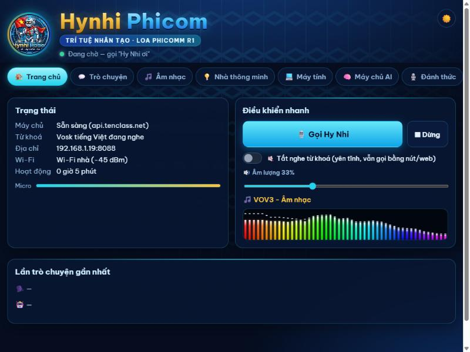
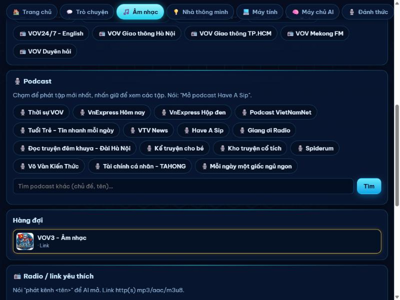
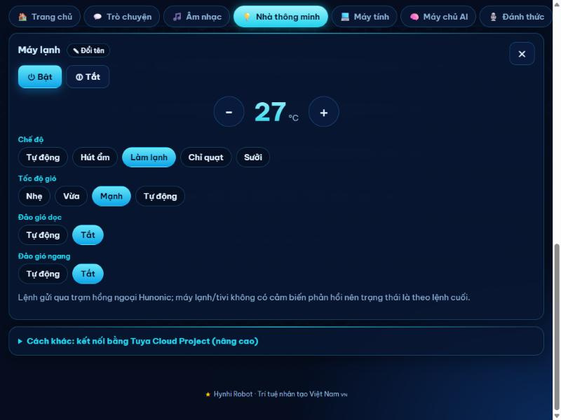

NẠP QUA USB · KHÔNG CẦN CÀI PHẦN MỀM
Nạp firmware
cho Hynhi Robot
Chọn loại robot, cắm cáp USB rồi bấm nạp. Dùng Chrome hoặc Edge trên máy tính.
Tùy chọn nâng cao
Bo dùng USB gốc của ESP32-S3 luôn chạy tốc độ tối đa. Nếu trình nạp mới gặp lỗi, dùng .
Nhật ký chi tiết
Bo ESP32 không tự vào chế độ nạp? Giữ nút BOOT, bấm rồi thả EN, giữ BOOT tới khi trang báo đang nạp.
Sau khi nạp: điện thoại vào Wi-Fi Hynhi-BT-xxxx, mở 192.168.4.1, chọn cùng Wi-Fi với robot. Bật loa ở chế độ ghép đôi (đèn nháy): bridge tự tìm và kết nối. Robot tự thấy bridge ở tab Bluetooth.
Chỉ dùng ESP32 classic (WROOM-32, 32D/E, 32S, 32U). ESP32-S2/S3/C3 không có Bluetooth Classic.
- Đang đọc gói firmware…
- Cắm cáp USB dữ liệuDùng cáp có truyền dữ liệu, không phải cáp chỉ sạc.
- Bấm “Kết nối”Chọn cổng USB của robot trong danh sách.
- Chọn kiểu nạpCập nhật nhanh giữ cài đặt; Cài mới hoàn toàn dùng cho bo mới hoặc khi robot lỗi.
- Chờ robot khởi động lạiTrang hiện từng bước, tốc độ và thời gian còn lại. Đừng rút cáp khi đang ghi.
THEO BẢN ĐANG CHỌN
Sơ đồ đấu nối · Robot để bàn
LOA PHICOMM R1 · TRỢ LÝ AI TIẾNG VIỆT
Hynhi Phicom
Biến loa Phicomm R1 thành trợ lý AI nói tiếng Việt: gọi “Hy Nhi ơi” để hỏi đáp, nghe nhạc, nghe radio, điều khiển nhà thông minh và máy tính. Cài từ Windows qua Wi‑Fi, không cần tháo loa.
- Phiên bản 1.9.2
- ZIP · 13 MB
- Windows 10/11
- Android 5.1 trên R1

Tính năng nổi bật
- 🎙️ Gọi “Hy Nhi ơi”Từ khoá tiếng Việt nhận ngay trên loa, không cần Internet. Vẫn gọi được khi đang phát nhạc. Sau mỗi câu trả lời, loa nghe tiếp 30 giây để bạn nói tiếp không cần gọi lại.
- 🧠 Trợ lý AI luôn nói tiếng ViệtKết nối xiaozhi.me hoặc máy chủ AI riêng. Tự chặn câu trả lời tiếng Trung và yêu cầu trả lời lại bằng tiếng Việt. Lệnh quen thuộc xử lý ngay trên loa cho nhanh.
- 🎵 YouTube và ZingMP3Nói “mở bài…” để loa tìm và phát. Xem video YouTube trên điện thoại hay máy tính, tiếng phát ra loa và khớp hình, dừng hay tua đều đồng bộ.
- 📻 Radio VOV và podcastVOV1, VOV2, VOV3, VOV Giao thông và các chương trình podcast tiếng Việt, chọn bằng giọng nói hoặc một chạm.
- 🎚️ Equalizer và phổ nhạcChế độ âm thanh có sẵn, chỉnh từng dải và tăng bass. Phổ nhạc màu trắng–đỏ–xanh–xanh dương chạy theo bài hát.
- 💡 Smart Life và HunonicLiên kết Smart Life bằng User Code và mã QR. Đăng nhập Hunonic để bật tắt công tắc, chỉnh máy lạnh và TV hồng ngoại. Đổi tên và biểu tượng từng thiết bị.
- 🖥️ Điều khiển máy tínhCài Desktop Bridge kèm bộ cài, máy tính tự ghép với loa. Nói “mở YouTube trên máy tính”, “tăng âm lượng máy tính”, “mở Zalo”.
- ⏰ Báo thức, thời tiết, tiện íchĐặt báo thức bằng giọng nói, hỏi thời tiết, đèn LED đổi màu theo trạng thái. Loa đọc địa chỉ trang điều khiển khi khởi động hoặc khi bạn hỏi.
Cài đặt trong 4 bước
- Tải và giải nénGiải nén toàn bộ
HynhiPhicom-Setup.ziptrên máy Windows. - Nối máy tính với loaLoa mới: nối Wi‑Fi Phicomm_R1_xxxx do loa phát. Loa đã vào mạng nhà: dùng chung Wi‑Fi với loa.
- Chạy CaiDat-HynhiPhicom.batChọn cách kết nối, nhập Wi‑Fi nhà, bấm CÀI ĐẶT. Có thể tích chọn cài điều khiển máy tính.
- Mở trang điều khiểnLoa đọc địa chỉ dạng
http://192.168.x.x:8088. Mở trên điện thoại hoặc máy tính cùng mạng.
Giao diện trên loa






MCP ENDPOINT · CHẠY TRÊN INTERNET · MIỄN PHÍ
Hynhi MCP
Thêm 34 công cụ trực tuyến cho mọi robot Xiaozhi: thời tiết, tin tức, xổ số, lịch vạn niên, giá vàng, chứng khoán, gia sư 23 môn, tư vấn luật và sức khoẻ, kể chuyện cho bé, ôn thi bằng lái. Không cần nạp lại firmware, không cần bật máy tính.
- Đang kiểm tra máy chủ…
- Mở xiaozhi.meĐăng nhập, chọn Agent của robot → Cấu hình.
- Lấy điểm cuối MCPBấm Lấy điểm cuối MCP và sao chép địa chỉ
wss://api.xiaozhi.me/mcp/?token=… - Dán vào ô bên dướiBấm Kết nối MCP. Robot dùng được ngay ở câu hỏi tiếp theo.
ĐĂNG KÝ ROBOT
Kết nối MCP
CÔNG CỤ CHO AI
Robot làm được gì
THỬ NGAY TRÊN TRÌNH DUYỆT
Chạy thử công cụ
NÂNG CAO
Máy chủ MCP
Máy chủ mặc định do Hynhi vận hành. Bạn có thể tự chạy máy chủ riêng miễn phí trên Render (mã nguồn trong repo này, thư mục mcp-server), rồi dán địa chỉ vào đây.
KẾT NỐI USB · ĐỌC TRỰC TIẾP TỪ ROBOT
Chẩn đoán
Cắm robot vào máy tính rồi bấm Kết nối ESP32. Trang đọc thông tin chip, khởi động lại robot và hiện địa chỉ trang cấu hình. Đóng các chương trình khác đang mở cổng này trước khi kết nối.
Chưa kết nối.
- Cổng
- —
- Chip
- —
- Tính năng
- —
- Flash
- —
- Thạch anh
- —
- Địa chỉ MAC
- —
- Địa chỉ IP
- —
- Wi-Fi
- —
- Firmware
- —
- Bo mạch
- —
- Camera
- —
- Lần khởi động trước
- —
- RAM nội / PSRAM
- — · —